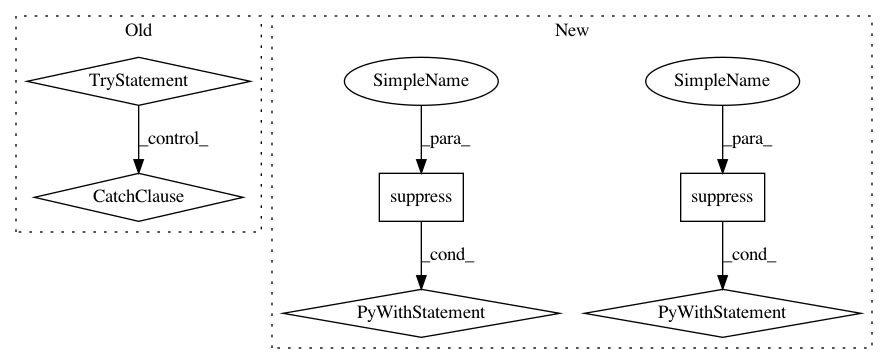

aad4bd59efbf00058e961669d2c5d54cc997ed04,ggplot/geoms/geom_path.py,geom_path,draw,#Any#Any#Any#Any#,64
Before Change
@staticmethod
def draw(pinfo, scales, coordinates, ax, **params):
try:
if params["linejoin"] == "mitre":
params["linejoin"] = "miter"
except KeyError:
pass
try:
if params["lineend"] == "square":
params["lineend"] = "projecting"
except KeyError:
After Change
@staticmethod
def draw(pinfo, scales, coordinates, ax, **params):
with suppress(KeyError):
if params["linejoin"] == "mitre":
params["linejoin"] = "miter"
with suppress(KeyError):
if params["lineend"] == "square":
params["lineend"] = "projecting"
pinfo["color"] = make_rgba(pinfo["color"],
pinfo["alpha"])
constant = params.pop("constant", False)
In pattern: SUPERPATTERN
Frequency: 4
Non-data size: 6
Instances
Project Name: has2k1/plotnine
Commit Name: aad4bd59efbf00058e961669d2c5d54cc997ed04
Time: 2015-06-10
Author: has2k1@gmail.com
File Name: ggplot/geoms/geom_path.py
Class Name: geom_path
Method Name: draw
Project Name: has2k1/plotnine
Commit Name: e41afd3c49c9357b26958c8616a4a5f3c6fc1d44
Time: 2016-08-11
Author: has2k1@gmail.com
File Name: ggplotx/ggplot.py
Class Name: ggplot
Method Name: draw_legend
Project Name: eth-cscs/reframe
Commit Name: a38458d4f97416fa690e98fd9182456edc62e3b6
Time: 2021-03-12
Author: karakasis@cscs.ch
File Name: reframe/core/pipeline.py
Class Name: RegressionTest
Method Name: _rfm_init
Project Name: has2k1/plotnine
Commit Name: aad4bd59efbf00058e961669d2c5d54cc997ed04
Time: 2015-06-10
Author: has2k1@gmail.com
File Name: ggplot/geoms/geom.py
Class Name: geom
Method Name: __init__
Project Name: has2k1/plotnine
Commit Name: aad4bd59efbf00058e961669d2c5d54cc997ed04
Time: 2015-06-10
Author: has2k1@gmail.com
File Name: ggplot/geoms/geom_path.py
Class Name: geom_path
Method Name: draw